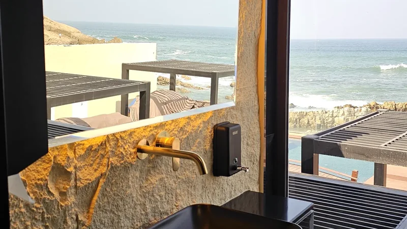
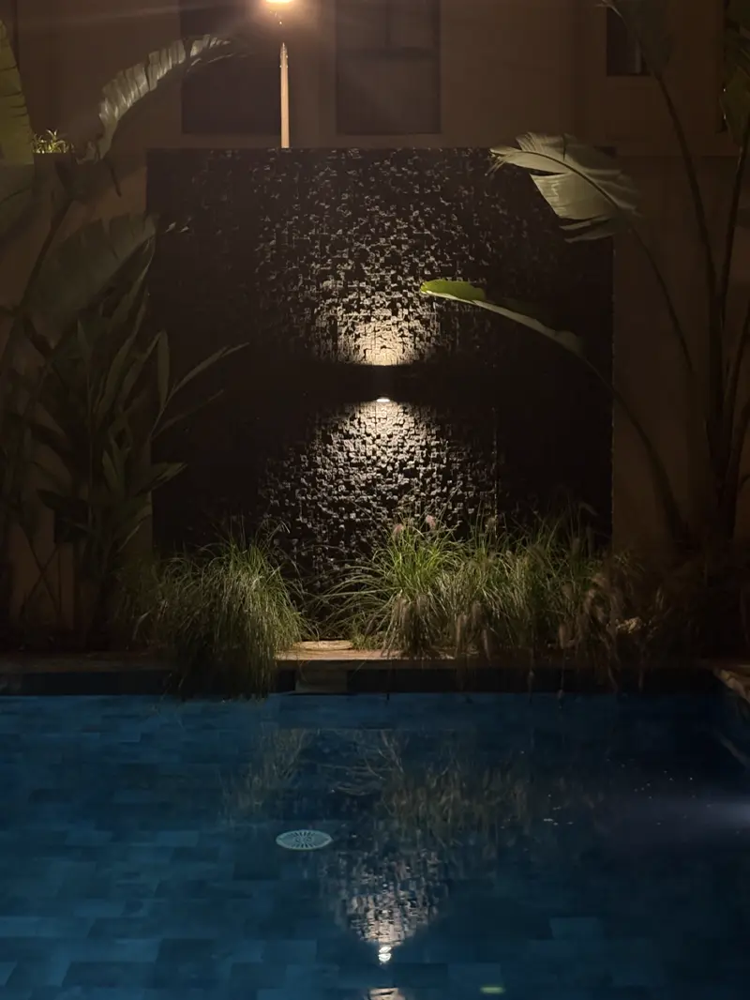
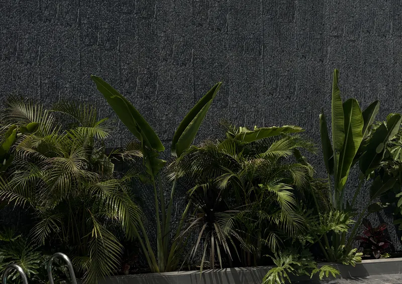
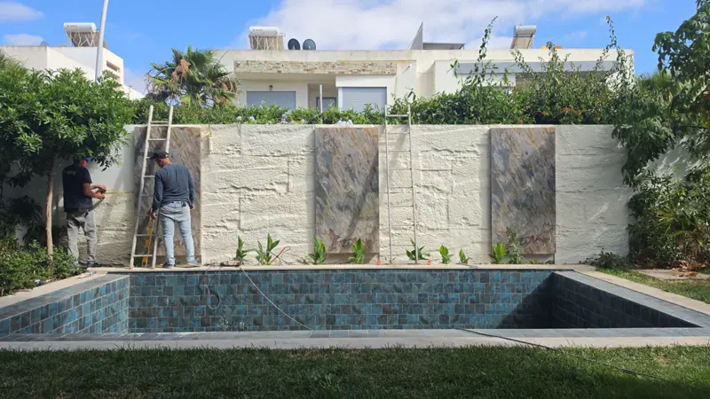
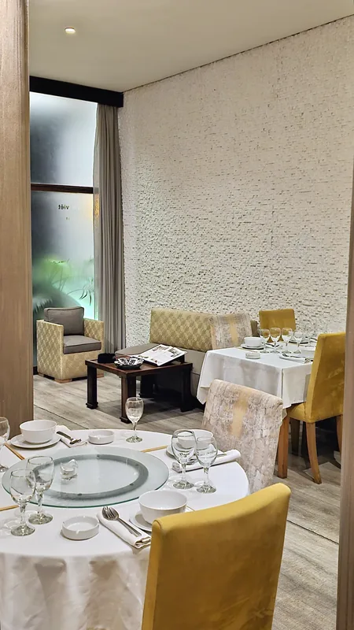
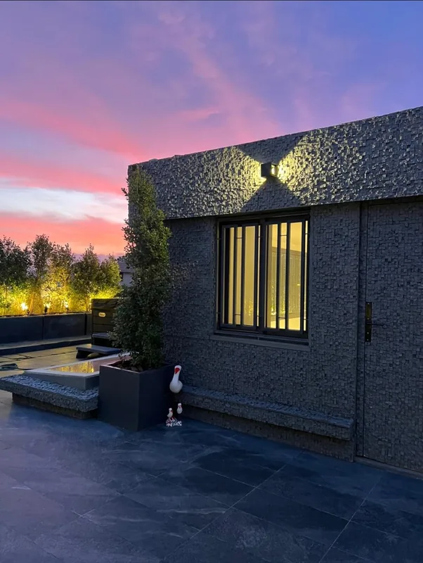
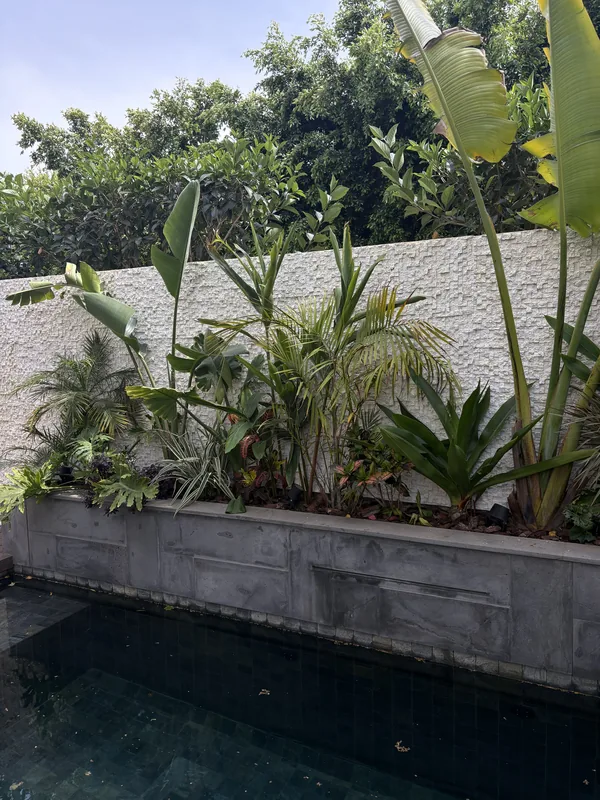
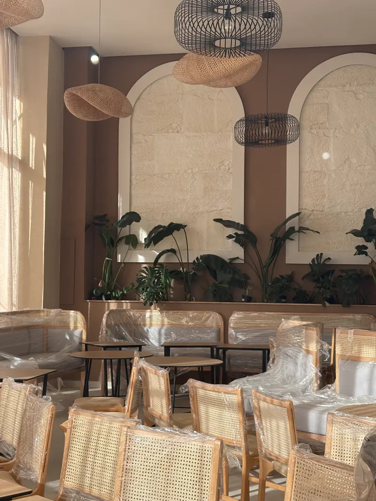
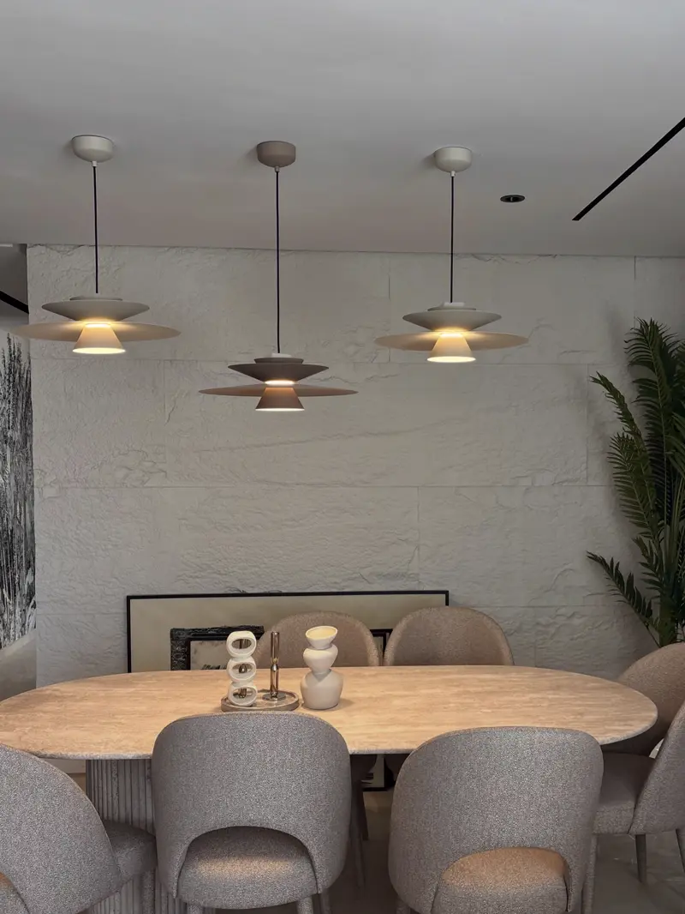
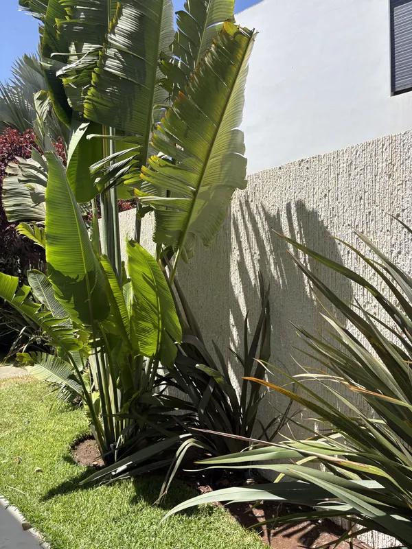

Carrelage, zellige ou panneau effet pierre pour une façade ou un mur décoratif
Le carrelage est imbattable au sol et dans la douche. Sur une façade, un mur de piscine, une entrée ou un mur de salon, on cherche autre chose : un relief, une matière, une teinte. Voici comment se comparent le carrelage, le zellige et Le Celestone™, sans parti pris.
Le Marion, restaurant face à la mer · Big Rock, beige
Où le carrelage reste imbattable, et où un relief a plus à offrir
Un carreau est plat : même quand il imite la pierre, le motif est imprimé ou à peine structuré, et le mur se lit en joints. C'est parfait pour un sol ou une douche. Pour un mur que l'on veut regarder, un relief véritable change la lumière et la matière.
Gardez le carrelage ou le zellige pour…
- les sols, intérieurs et extérieurs ;
- la douche et les zones d'eau directe ;
- le bassin et la margelle d'une piscine ;
- un décor traditionnel en zellige : fontaine, patio, soubassement.
Choisissez un panneau en relief pour…
- une façade de villa ou une devanture ;
- un mur de jardin ou de piscine ;
- une entrée, un hall, une cage d'escalier ;
- un mur de salon ou un mur TV.
Carrelage, zellige ou Le Celestone™ : le comparatif pour un mur
Trois matières, trois logiques. Le tableau les compare pour habiller un mur, dedans ou dehors.
| Critère | Carrelage, grès cérame effet pierre | Zellige | Le Celestone™ |
|---|---|---|---|
| Aspect | Surface plane ; motif imprimé, parfois légèrement structuré ; le mur se lit en joints | Terre cuite émaillée taillée à la main : reflets, irrégularités, motifs traditionnels | Vrai relief moulé sur la pierre, l'ardoise ou la brique ; joints à peine visibles |
| Pose | Au mortier-colle, carreau par carreau, puis joints | Pose experte par un maâlem, joints très fins, chantier long | En grands panneaux, collés en cordons et vissés ; joints repris au mastic |
| En façade | Le décollement de carreaux fait partie des désordres connus des façades carrelées ; les teintes foncées se dilatent davantage au soleil | Surtout employé en intérieur, en patio et en fontaine | N'absorbe pas l'eau, additifs anti-UV, peint avec une acrylique pour l'extérieur |
| Teinte | Celle du carreau, fixée à l'achat | Celle de l'émail | Peint en Jotun dans votre teinte ; se repeint |
| Réparation | Remplacer un carreau cassé suppose de retrouver le même modèle | Pièce artisanale : à refaire par un artisan | Un choc se reprend au mastic, puis à la peinture |
| Coût relatif | Large gamme, souvent le plus bas à l'achat ; pose et joints à compter | Artisanal et long à poser : souvent le plus élevé | En général au-dessus d'un carrelage courant, en dessous de la pierre posée ; pose rapide |
Sources : fiches de l'Agence Qualité Construction sur les désordres des revêtements de façade ; guides de pose du zellige. Aucun prix ici : il varie trop d'un mur à l'autre (voir plus bas).
Pour un sol ou une douche ?
Le carrelage, sans hésiter. Le Celestone™ habille les murs et les plafonds, pas les sols.
Pour un décor marocain traditionnel ?
Le zellige : un savoir-faire que rien ne remplace pour une fontaine ou un patio.
Pour un mur qui a du relief ?
Le Celestone™ : l'aspect de la pierre, dedans comme dehors, dans votre teinte, sans carreaux ni joints à faire.
Des reliefs pour les murs où l'on aurait mis du carrelage
Tous se posent dedans comme dehors et se peignent dans la teinte de votre choix. Photos prises sur nos chantiers.

Cubo
Le rythme d'un carrelage, avec un vrai relief : de petits blocs de pierre éclatée qui accrochent la lumière.
Voir Cubo
Mattoni
De fines lamelles de pierre, là où l'on aurait posé une faïence effet ardoise.
Voir Mattoni
Big Rock
La pierre brute en grands panneaux. Ici, le relief au mur, la mosaïque dans le bassin : chaque matière à sa place.
Voir Big Rock
Cubo en blanc
Peint en blanc, le même relief devient un mur d'accent lumineux, là où l'on aurait posé une faïence décorative.
Tous les effets pierreAutres reliefs
L'effet béton de Cemento et Béton Décoffrage, l'effet bois de Bois Cubo, la brique de Brick, le relief sculpté de Moon.
Façades, piscines, restaurants : un relief à la place des carreaux
Des chantiers réels, photographiés sur place.





Mur de jardin et de piscine · Façade de villa · Toutes nos réalisations
Pas de carreaux à poser un à un
Photo et simulation
Une photo du mur sur WhatsApp. Sous 24 h, vous le voyez habillé, avec le modèle et la teinte proposés.
Visite et métré
Nous mesurons le mur, ses angles et ses ouvertures, et nous regardons le support avec vous.
Pose
Des panneaux entiers, collés en cordons et vissés. Joints et têtes de vis disparaissent sous le mastic acrylique.
Peinture
Mise en teinte en Jotun, avec une acrylique pour l'extérieur, dedans comme dehors.
La pose filmée sur un chantier : voir la vidéo sur la page pose.
Carrelage ou panneau effet pierre : de quoi dépend le budget
Aucun tarif au m² n'est publié : chaque mur a ses mesures, sa hauteur et ses découpes. Pour comparer avec un devis de carrelage, comparez à surface égale, pose, joints et finition compris. Les critères sont détaillés sur la page prix d'un revêtement mural.
- La surface réellement habillée, ouvertures déduites.
- Le modèle : Cubo, Mattoni, Big Rock ou un autre relief.
- Le support : enduit, béton, ancien carrelage ou marbre, du moment qu'il est plan.
- La hauteur et l'accès.
- La peinture : la teinte Jotun choisie.
Votre estimation sous 24 h
Envoyez sur WhatsApp :
- une photo du mur ;
- ses dimensions approximatives ;
- ce qui le recouvre aujourd'hui (enduit, carrelage, marbre…) ;
- votre quartier ou votre ville.
Carrelage ou panneau effet pierre : vos questions
Peut-on poser Le Celestone™ sur un carrelage existant ?
En règle générale, nos habillages se posent sur toute surface plane : nos équipes en ont déjà posé sur du marbre, du bois, du BA13 et de l'enduit. Un ancien carrelage plan et bien adhérent se regarde de la même façon, pendant la visite de métré.
Le Celestone™ remplace-t-il le carrelage dans une douche ou au sol ?
Non. Pour une douche, un sol ou le bassin d'une piscine, le carrelage et le zellige restent la bonne solution. Le Celestone™ habille les murs et les plafonds : façade, mur de piscine, entrée, mur de salon.
Carrelage de façade ou panneau effet pierre : lequel tient le mieux dehors ?
Les deux durent quand ils sont bien posés. Un carrelage de façade dépend beaucoup du collage et du support : le décollement de carreaux fait partie des désordres connus. Le Celestone™ n'absorbe pas l'eau, contient des additifs anti-UV et se colle et se visse au mur.
Et le zellige ?
Le zellige est un savoir-faire marocain à part entière : pour une fontaine, un patio ou un décor traditionnel, rien ne le remplace. Pour un mur en relief d'aspect pierre, dedans ou dehors, Le Celestone™ est une autre voie.
Peut-on l'utiliser autour d'une piscine ?
Oui, sur les murs : nos équipes ont habillé des murs de piscine en Mattoni, Cubo et Big Rock. Pour le bassin et la margelle, gardez le carrelage, le zellige ou la pierre.
Est-ce plus cher qu'un carrelage ?
En général, oui, par rapport à un carrelage courant, et moins cher qu'une pierre naturelle posée. La comparaison se fait à surface égale, pose et joints compris. Envoyez-nous la surface et une photo : l'estimation vous revient sous 24 h.
Comment s'entretient-il ?
Presque rien : un coup de jet d'eau dehors, un chiffon humide dedans. Et pour changer de teinte, il se repeint.
Dans quels quartiers posez-vous ?
Anfa, Aïn Diab, Californie, CIL, Oasis, CFC, Palmiers, Tamaris, Bouskoura et Dar Bouazza. Ailleurs, écrivez-nous : nous livrons dans tout le Maroc.
Un relief de pierre
là où l'on attendait des carreaux
Envoyez une photo de votre mur : simulation et estimation sous 24 h. Ou venez comparer les reliefs au showroom.
Showroom : 11 Rue Hounaine, Bd d'Anfa, Casablanca · Lun–Ven 10h30–13h / 15h30–19h · Sam 11h–13h